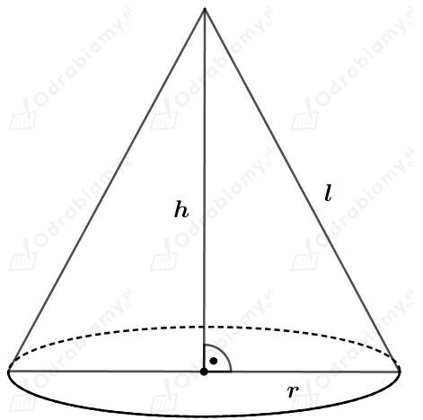
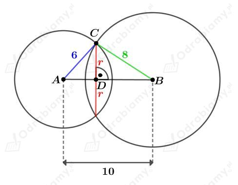
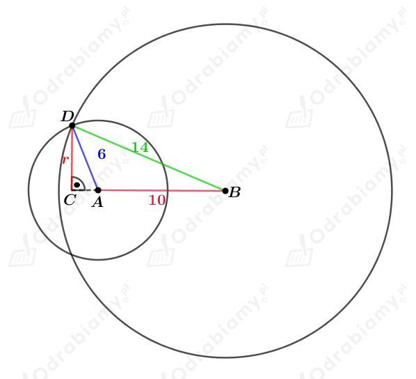
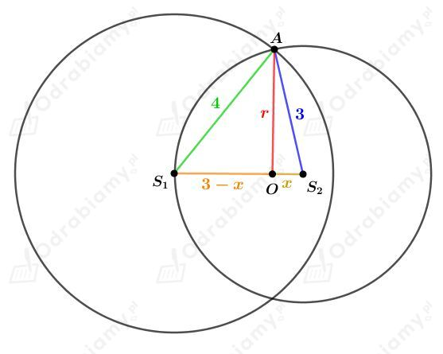
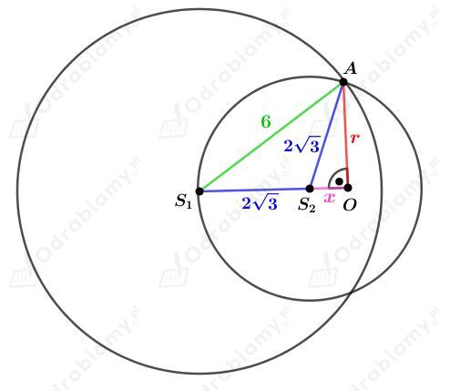
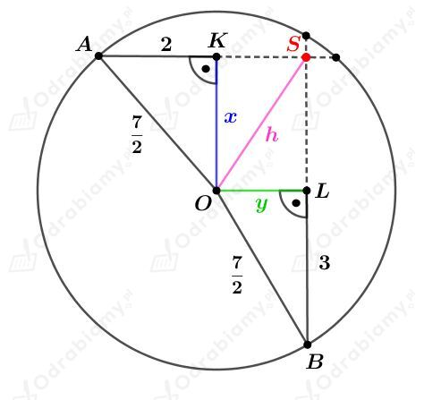
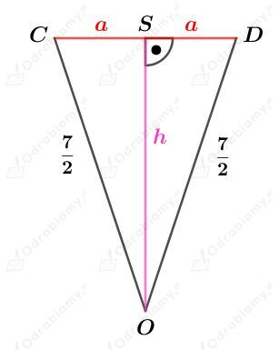
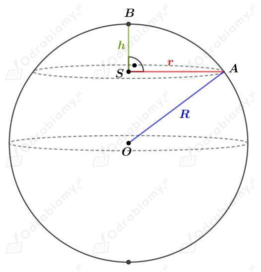
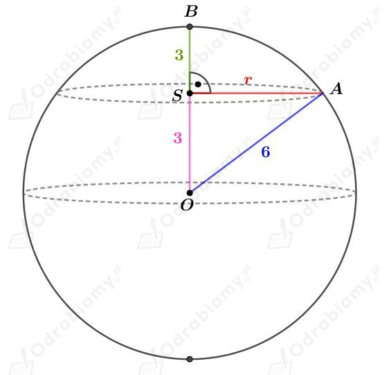

| Pole powierzchni kuli o promieniu r wyraża się wzorem: Objętość kuli o promieniu r wyraża się wzorem: |
a)
Sześcian o krawędzi długości a przetopiono na kulę o promieniu długości r. Zatem te bryły mają równe objętości.
Wyznaczmy objętość sześcianu. Mamy:
Wyznaczmy objętość kuli. Mamy:
Skoro te bryły mają równe objętości, to mamy:
Wyznaczmy stosunek pola powierzchni tej kuli do pola powierzchni tego sześcianu. Mamy:
co kończy dowód.
b)
Przekrój osiowy walca jest kwadratem. Niech r będzie długością promienia podstawy tego walca. Wtedy wysokość walca ma długość 2r. Wyznaczmy objętość tego walca. Mamy:
Dana jest kula o promieniu długości R. Wyznaczmy jej objętość. Mamy:
Metalowy walec przetopiono na kulę. Zatem te dwie bryły mają równe objętości. Stąd:
co kończy dowód.
| Pole powierzchni kuli o promieniu r wyraża się wzorem: Objętość kuli o promieniu r wyraża się wzorem: |
Dana jest kula o promieniu długości R.
Dany jest stożek przedstawiony na rysunku:

Stosunek pola powierzchni bocznej stożka do jego pola podstawy wynosi 2,6. Mamy stąd:
Korzystając z twierdzenia Pitagorasa mamy:
Wiedząc, że objętości tego stożka i tej kuli są równe otrzymujemy:
a)
Rysunek:

Zauważmy, że
zatem na mocy twierdzenia odwrotnego do twierdzenia Pitagorasa, trójkąt ABC jest prostokątny.
Trójkąty ADC i ABC są prostokątne i mają wspólny kąt przy wierzchołku A, zatem na mocy cechy podobieństwa kąt-kat-kąt te trójkąty są podobne.
Zatem prawdziwa jest równość
skąd mamy
Wyznaczmy długość tego okręgu. Mamy:
b)
Rysunek:

Odcinek r jest wysokością trójkąta ABD opuszczoną z wierzchołka D tego trójkąta.
Wyznaczmy połowę obwodu p tego trójkąta. Mamy:
Wyznaczmy pole trójkąta ABD. Korzystając ze wzoru Herona mamy:
Korzystając z pola trójkąta ABD mamy:
Wyznaczmy długość tego okręgu. Mamy:
Środek sfery o środku S1 należy do sfery o środku S2. Częścią wspólną obu tych sfer jest pewien okrąg o promieniu długości r.
a)
Rysunek:

Korzystając z twierdzenia Pitagorasa dla trójkąta OS2A otrzymujemy:
Korzystając z twierdzenia Pitagorasa dla trójkąta S1OA otrzymujemy:
Więc
Obliczmy długość tego okręgu. Mamy:
b)
Rysunek:

Korzystając z twierdzenia Pitagorasa dla trójkąta S2OA mamy:
Korzystając z twierdzenia Pitagorasa dla trójkąta S1OA mamy:
Zatem
Obliczmy długość tego okręgu. Mamy:
Dana jest kula o średnicy długości 7. Podaną kulę przecięto dwiema prostopadłymi płaszczyznami. Otrzymane przekroje są kołami o promieniach długości 2 i 3.
Naszkicujmy przekrój tej kuli przechodzący przez jej środek:

Odcinek h jest odległością między środkiem kuli O i odcinkiem (zaznaczonym na rysunku w podręczniku na czerwono), którego długości szukamy.
Korzystając z twierdzenia Pitagorasa dla trójkąta AOK otrzymujemy:
Korzystając z twierdzenia Pitagorasa dla trójkąta AOK otrzymujemy:
Korzystając z twierdzenia Pitagorasa dla trójkąta KOS otrzymujemy:
Odcinek czerwony i promienie kuli tworzą trójkąt równoramienny, którego wysokością jest odcinek h. Naszkicujmy ten trójkąt:

Korzystając z twierdzenia Pitagorasa dla trójkąta OSD otrzymujemy:
Zatem
Odp. Podany odcinek ma długość √3.
| Czasza kulista i odcinek kulisty  Czaszą kulistą nazywamy każdą z dwóch części, na które dzieli powierzchnię kuli przecinająca ją płaszczyzna. Pole powierzchni czaszy kulistej wyraża się wzorem: Każdą z dwóch brył, na które dzieli kulę przecinająca ją płaszczyzna, nazywamy odcinkiem kulistym. Objętość odcinka kulistego wyraża się wzorem: |
Rysunek:

Wyznaczmy objętość tej kuli. Mamy:
Wyznaczmy objętość "górnego" odcinka kulistego. Korzystając ze wzoru na jego objętość mamy:
Wyznaczmy objętość "dolnego" odcinka kulistego. Mamy: